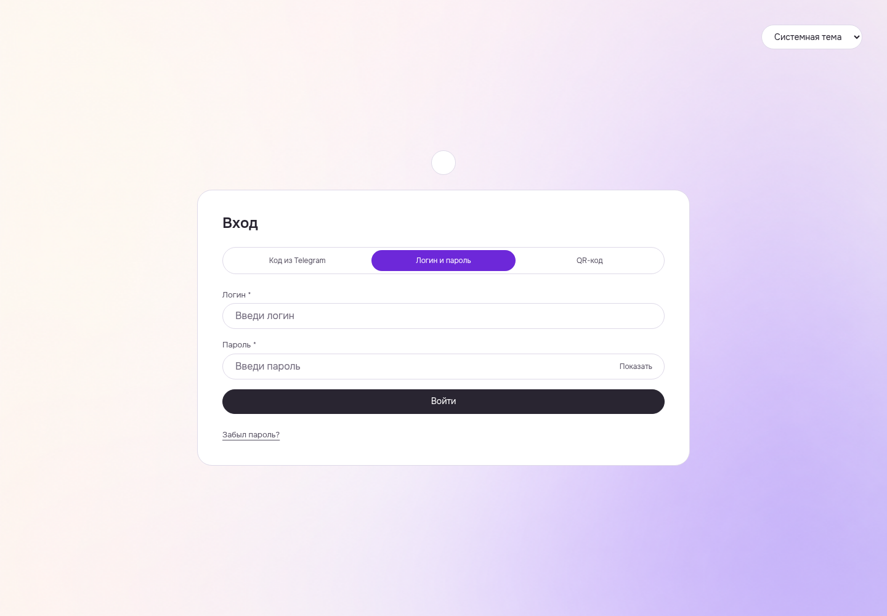

WEB Student: результат после выхода при ожидающем ответе
Ограниченный пользовательский результат принят вместе с шестью детерминированными проверками настоящего transport и независимым source review. Третий повтор не нужен.
Raw EXIT1/completedfalse/changedOwnerLossObservedfalse/clientBodyCompletedfalse retained. Full client body delivery and exact network completion not proven. Guest login visible, private StudentHome/Profile absent, page errors0. Native logout204/oldBearer401, own session terminal, browser closed. No raw driver PASS. Three Student current guards source1057; six behavior checks and strict WEB build reused.
Manifest · Критерии и ограничения
После выхода остаётся форма входа без данных прежней сессии
Guest native login form readable with blank credential fields, no authenticated Profile/nav/private StudentHome visible; no horizontal overflow at1440/root16. This observes final guest UI only; target read completion/body delivery remain unproved.
WEB-OWNERLOSS__WT-OWNER-AF01-v2-guest-after-old-real-today-release__light__1440__481512e93
revision 481512e93575070a1f471c65af54df5b4e31cd61
SHA256 aeefcfa3787ae131d1b1627600daece9d4ed0d6ca35e380581c268115c9bc5cd
